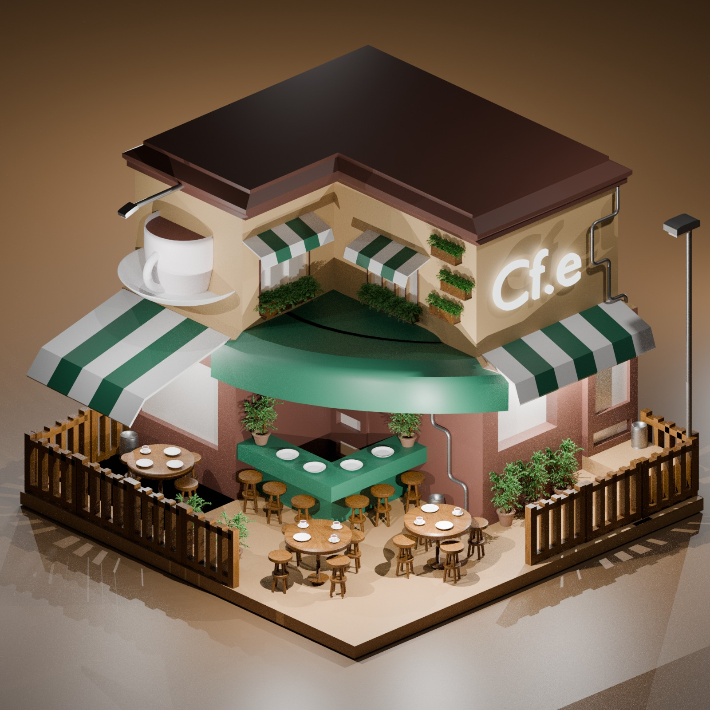
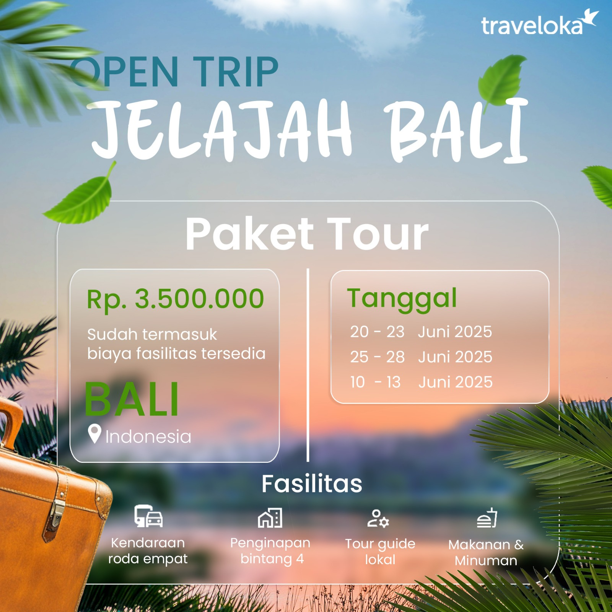
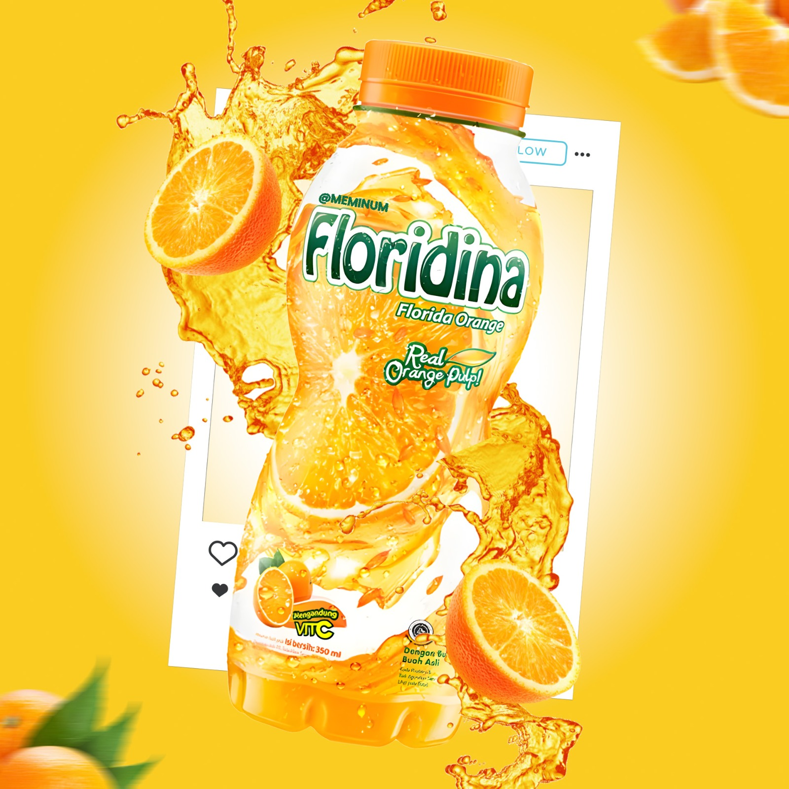

About Me (&)
My Journey
Saya adalah Muhammad Zulfran Rayhan Lesmana, seorang desainer yang berfokus pada Graphic Design dan 3D Visualization. Saya memiliki ketertarikan dalam menciptakan karya visual yang kreatif, fungsional, dan komunikatif, mulai dari branding, media promosi, hingga visualisasi arsitektur. Dalam proses berkarya, saya menguasai berbagai perangkat lunak seperti Blender 3D, Adobe Photoshop, Adobe Illustrator, SketchUp, dan Affinity Designer untuk menghasilkan desain yang berkualitas serta sesuai dengan kebutuhan setiap proyek.
Growing Reach
Seiring berkembangnya pengalaman saya di dunia kreatif, saya terus memperluas kemampuan di bidang Graphic Design dan 3D Visualization melalui berbagai proyek dan eksplorasi desain. Saya berkomitmen untuk terus mengikuti perkembangan industri serta meningkatkan kualitas karya dengan memanfaatkan Blender 3D, Adobe Photoshop, Adobe Illustrator, SketchUp, dan Affinity Designer. Bagi saya, setiap proyek adalah kesempatan untuk belajar, berinovasi, dan menghadirkan solusi visual yang kreatif, fungsional, serta memberikan dampak positif bagi setiap klien maupun audiens.
Expanding Reach
Saya terus memperluas jangkauan karya dengan mengembangkan kemampuan di bidang Graphic Design dan 3D Visualization, serta berkolaborasi dalam berbagai proyek kreatif. Melalui penguasaan Blender 3D, Adobe Photoshop, Adobe Illustrator, SketchUp, dan Affinity Designer, saya berupaya menghadirkan solusi visual yang inovatif, berkualitas, dan relevan dengan kebutuhan klien. Setiap pengalaman menjadi langkah untuk membangun portofolio yang lebih luas, memperkuat kemampuan profesional, dan menciptakan dampak yang lebih besar melalui desain
First Freelance
Memulai perjalanan sebagai freelancer memberikan saya kesempatan untuk menerapkan kemampuan Graphic Design dan 3D Visualization dalam proyek nyata. Dari setiap kolaborasi, saya belajar memahami kebutuhan klien, mengelola waktu secara profesional, serta menghasilkan solusi visual yang kreatif dan berkualitas. Pengalaman ini menjadi fondasi penting dalam membangun portofolio, meningkatkan keterampilan, dan mengembangkan diri sebagai desainer yang mampu memberikan hasil terbaik pada setiap proyek.
Mastery & Vision
Saya memiliki visi untuk menjadi seorang profesional di bidang Graphic Design dan 3D Visualization yang mampu menghadirkan karya berkualitas tinggi dengan standar industri. Di masa depan, saya ingin terus mengembangkan kemampuan teknis dan kreativitas, memperluas pengalaman melalui proyek-proyek berskala nasional maupun internasional, serta membangun studio kreatif yang berfokus pada branding, visualisasi arsitektur, dan solusi desain inovatif. Bagi saya, setiap tantangan adalah kesempatan untuk terus belajar, berkembang, dan menciptakan dampak positif melalui desain.

Isometric Coffee Shop
Model 3D bergaya isometrik yang menampilkan sebuah coffee shop modern dengan area indoor dan outdoor yang lengkap. Dibuat menggunakan Blender, proyek ini mencakup proses modeling, texturing, lighting, serta rendering untuk menciptakan visual arsitektur yang menarik. Desain ini menunjukkan kemampuan dalam membuat environment 3D yang detail dan estetik.

Open Trip Bali Social Media Design
Desain konten media sosial bertema promosi paket wisata Bali yang dibuat menggunakan Adobe Illustrator. Mengusung konsep modern dengan tata letak yang bersih, tipografi yang jelas, serta elemen visual yang menarik sehingga informasi mudah dipahami dan mampu meningkatkan daya tarik promosi di media sosial.

Luxury Pen Product Visualization
Visualisasi produk 3D berupa sebuah pena premium yang ditempatkan di dalam kotak eksklusif dengan konsep elegan dan mewah. Proyek ini dibuat menggunakan Blender, mencakup proses 3D modeling, material texturing, lighting, dan rendering untuk menghasilkan tampilan yang realistis dan berkelas. Cocok digunakan sebagai media promosi, branding, maupun presentasi produk.

Floridina Product Advertisement
Desain iklan produk minuman Floridina yang dibuat menggunakan Adobe Photoshop dengan teknik photo manipulation dan compositing. Efek percikan jus, irisan jeruk, serta perpaduan warna cerah memberikan kesan segar dan dinamis. Proyek ini menampilkan kemampuan dalam mengolah gambar, mengatur pencahayaan, serta menciptakan visual promosi yang menarik dan profesional untuk kebutuhan digital marketing.
Mau lihat project lain saya? Yuk ke Behance
Lihat koleksi lengkap project 3D, branding, dan eksperimen desain lainnya di profil Behance saya.
Tanya kuy!
Saya menyediakan layanan Graphic Design dan 3D Design, seperti desain media sosial, branding, poster, banner, logo, visualisasi arsitektur, desain interior & eksterior, 3D modeling, hingga rendering.
Waktu pengerjaan bergantung pada tingkat kesulitan proyek. Desain sederhana umumnya memerlukan waktu 1–3 hari, sedangkan proyek yang lebih kompleks seperti branding atau visualisasi 3D dapat memakan waktu beberapa hari hingga beberapa minggu.
File akan disesuaikan dengan kebutuhan Anda, seperti PNG, JPG, PDF, AI, PSD, BLEND, FBX, OBJ, atau format lainnya.
Ya. Saya dapat bekerja secara remote dengan klien dari berbagai daerah maupun luar negeri melalui komunikasi online.
Anda cukup menghubungi saya melalui halaman Kontak, email, atau media sosial. Setelah mendiskusikan kebutuhan proyek, saya akan memberikan penawaran, estimasi waktu, dan alur pengerjaan.
Saya mengutamakan desain yang kreatif, fungsional, dan sesuai tujuan klien. Setiap proyek dikerjakan dengan komunikasi yang jelas, perhatian terhadap detail, dan komitmen untuk memberikan hasil terbaik.